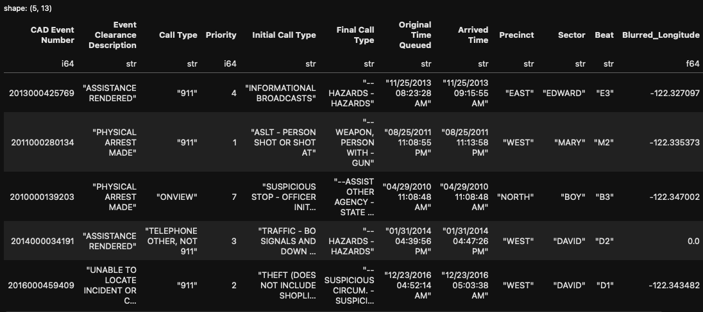

I’ve been itching for an excuse to learn Polars and a friend of mine gave me the idea to find a large data file and do some basic benchmarking on it and pandas. Polars claims to be a lot faster and more efficient, so let’s put it to the test eh?
Quick overview of this data taken from the source:
This data represents police response activity. Each row is a record of a Call for Service (CfS) logged with the Seattle Police Department (SPD) Communications Center. Calls originated from the community and range from in progress or active emergencies to requests for problem solving. Additionally, officers will log calls from their observations of the field.
Data Being Used: Link
Details of the data are a bit less important here as I’m using it entirely for benchmarking. Details in the link for the curious.
| Metric | Value |
|---|---|
| File Size | 1.17GB |
| Rows | 5.75 Million |
| Columns | 13 |
Here is a snapshot of the data, excluding the final column which is just the latitude.

This datasets fits my goals well. It’s over a gig in size and over 5 million rows. Perfect for what I’m trying to test.
I’ll be testing basic functionality here, nothing extremely rigorous. We’ll be examining the time it takes to read in data, perform basic filters, aggregations and selections. I collected 10 samples for data reading as it takes a while, but 100 samples for the rest of the tests.
I chose box plots for all of my visualizations as I found histograms to not be particularly informative in this specific case. All of my hypothesis tests have a pretty casual \(\alpha = 0.01\) here. Though, really, these tests are mostly for fun and aren’t intended to be rigorous statistical examinations of these libraries.
If you want to take a look at the script I wrote for testing it can be found in this github repository here though I will be including relevant snippets as we go.
Straightforward here, just used the .read_csv method for each library. I won’t be including the full trial function as it’s not particularly relevant. I collected data on 10 separate reads as previously mentioned. I considered the possibility of read ordering mattering in some niche possibility where weird cacheing happens, but found no difference.
# Pandas
start_time = time.time()
pd_df = pd.read_csv(path)
pd_end = time.time() - start_time
# Polars
start_time = time.time()
pl_df = pl.read_csv(path)
pl_end = time.time() - start_timePandas Read Summary
## Min. 1st Qu. Median Mean 3rd Qu. Max.
## 8.898 9.957 10.143 10.018 10.274 10.314Polars Read Summary
## Min. 1st Qu. Median Mean 3rd Qu. Max.
## 0.5846 0.6109 0.6201 0.6283 0.6420 0.7114t.test(df$polars_read_duration, df$pandas_read_duration)##
## Welch Two Sample t-test
##
## data: df$polars_read_duration and df$pandas_read_duration
## t = -69.762, df = 9.1241, p-value = 9.239e-14
## alternative hypothesis: true difference in means is not equal to 0
## 95 percent confidence interval:
## -9.693307 -9.085628
## sample estimates:
## mean of x mean of y
## 0.6283323 10.0177998Okay so the results are in. There is a lot of evidence to indicate that polars is substantially more performant for reading in data than pandas. This difference is to such a degree I’m really only doing a t-test as a formality. This on its own is enough to sell me on at least keeping polars in my back pocket.
Here I performed a very basic filter, I just wanted to look at all the rows where the call priority was 4. n=100 for each.
# Pandas trial
start_time = time.time()
pd_df.loc[pd_df["Priority"] == 4]
pd_end = time.time() - start_time
duration_data["pandas_filtering_duration"].append(pd_end)
# Polars trial
start_time = time.time()
pl_df.filter(pl.col("Priority") == 4)
pl_end = time.time() - start_time
duration_data["polars_filtering_duration"].append(pl_end)Pandas Filtering Summary
## Min. 1st Qu. Median Mean 3rd Qu. Max.
## 0.03109 0.03138 0.03152 0.03380 0.03171 0.25243Polars Filtering Summary
## Min. 1st Qu. Median Mean 3rd Qu. Max.
## 0.01012 0.01027 0.01031 0.01042 0.01039 0.01663t.test(df$polars_filtering_duration, df$pandas_filtering_duration)##
## Welch Two Sample t-test
##
## data: df$polars_filtering_duration and df$pandas_filtering_duration
## t = -10.581, df = 99.171, p-value < 2.2e-16
## alternative hypothesis: true difference in means is not equal to 0
## 95 percent confidence interval:
## -0.02776370 -0.01899504
## sample estimates:
## mean of x mean of y
## 0.01041786 0.03379723So the box plots indicate that polars is indeed faster here too and the hypothesis test results indicate that we’ve got sufficient evidence to support this alternative hypothesis. Of note that this isn’t to an extreme degree even with such a large dataset, but yet another point for polars here.
Here I performed a simple aggregation to get the mean of the priority column. n=100 for each.
# Pandas trial
start_time = time.time()
pd_df.groupby("Call Type")["Priority"].mean()
pd_end = time.time() - start_time
duration_data["pandas_agg_duration"].append(pd_end)
# Polars trial
start_time = time.time()
pl_df.group_by("Call Type").agg(pl.mean("Priority"))
pl_end = time.time() - start_time
duration_data["polars_agg_duration"].append(pl_end)Pandas Aggregation Summary
## Min. 1st Qu. Median Mean 3rd Qu. Max.
## 0.1844 0.1862 0.1872 0.1877 0.1879 0.2108Polars Aggregation Summary
## Min. 1st Qu. Median Mean 3rd Qu. Max.
## 0.05181 0.05368 0.14560 0.12883 0.19338 0.52160t.test(df$polars_agg_duration, df$pandas_agg_duration)##
## Welch Two Sample t-test
##
## data: df$polars_agg_duration and df$pandas_agg_duration
## t = -7.1945, df = 99.364, p-value = 1.201e-10
## alternative hypothesis: true difference in means is not equal to 0
## 95 percent confidence interval:
## -0.07514010 -0.04265424
## sample estimates:
## mean of x mean of y
## 0.1288286 0.1877258The box plot and test actually give us some interesting info here. We do have sufficient evidence to believe that polars is still faster here but the box plot gives more nuance. From the box plots we can see they’re quite close, which the confidence interval also indicates, but that pandas is far more consistent here. Polars has a surprisingly high variance when it comes to this very basic aggregation.
Here we simply select the call type and priority columns. n=100 for each.
# Pandas trial
start_time = time.time()
pd_df[["Call Type", "Priority"]]
pd_end = time.time() - start_time
duration_data["pandas_select_duration"].append(pd_end)
# Polars trial
start_time = time.time()
pl_df.select(["Call Type", "Priority"])
pl_end = time.time() - start_time
duration_data["polars_select_duration"].append(pl_end)Pandas Filtering Summary
## Min. 1st Qu. Median Mean 3rd Qu. Max.
## 0.04873 0.04923 0.04942 0.04956 0.04969 0.05211Polars Filtering Summary
## Min. 1st Qu. Median Mean 3rd Qu. Max.
## 7.415e-05 8.297e-05 8.607e-05 8.904e-05 9.227e-05 1.411e-04t.test(df$polars_select_duration, df$pandas_select_duration)##
## Welch Two Sample t-test
##
## data: df$polars_select_duration and df$pandas_select_duration
## t = -925.78, df = 99.064, p-value < 2.2e-16
## alternative hypothesis: true difference in means is not equal to 0
## 95 percent confidence interval:
## -0.04957523 -0.04936317
## sample estimates:
## mean of x mean of y
## 0.0000890398 0.0495582390This one is pretty convincing much like the read data. Selection, according to the boxplots, appears lightning fast in Polars and our test results show we have significant evidence to conclude that it is faster than Pandas. Realistically, they’re both very quick here so it isn’t a huge difference, but these types of performance wins add up a lot in a production environment when these operations need to be carried out potentially millions of times per day.
This was of course a pretty casual test. All the samples were taken from my Macbook Air and no other machines and the order of operations wasn’t randomized ever. I’m not intending this to be definitive proof of Polars being more performant, but these results show me that the claims Polars makes aren’t entirely full of hot air.
I intend to use Polars a lot more in the future and that read speed on its own has me extremely excited.